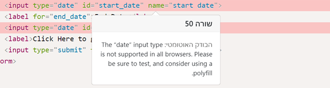
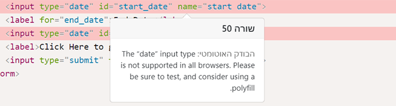

היי ,
בבניית האתר השתמשתי בdate, שמתי לב להערה במערכת בדיקת התרגילים.
הוספתי קישור לקובץ הjs polyfill אבל ההערה עדיין מופיע.
אשמח לעזרה 
הוספתי קישור 

היי ,
בבניית האתר השתמשתי בdate, שמתי לב להערה במערכת בדיקת התרגילים.
הוספתי קישור לקובץ הjs polyfill אבל ההערה עדיין מופיע.
אשמח לעזרה
הוספתי קישור 
עדיף שים יאשר אבל נראה לי שזה בדיוק מה שעלה כאן, ואז אתה רשאי להתעלם
אשמח לדעת אם תהיה קומבינציה של פוליפיל שפותרת את ההערה.
לא הצלחתי